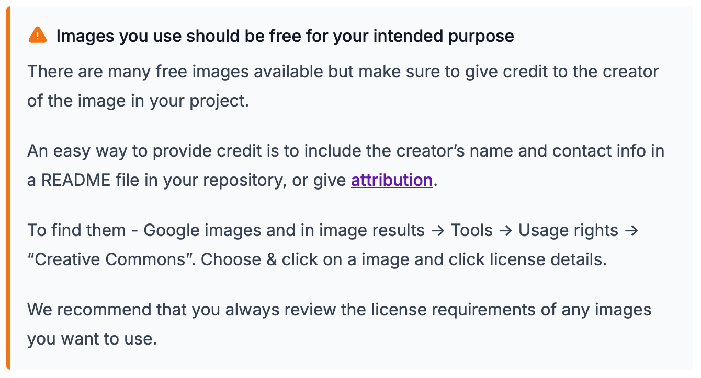
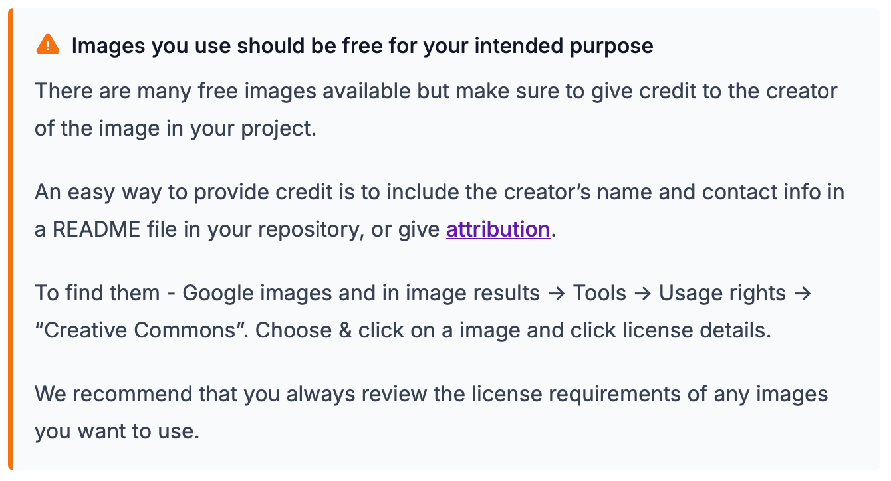

About The Odin Project
My youtube channel
Can you add a space between and attribute and its value in html?
Youtube - w/ target=_self & rel=noreferrer
Youtube - w/ target=_blank & rel=noopener and noreferrer
About

 
